(Fundstelle: BGBl. I 2016,790 - 791)
A. Prämienberechnung des Neuzugangs- x
= Alter
- ω
= Endalter der Sterbetafel
- lx
= Anzahl der Lebenden
- qx
= Sterbenswahrscheinlichkeit
- wx
= Stornowahrscheinlichkeit
- Kx
= Kopfschaden
- αx
= einmalige unmittelbare Abschlusskosten, gemessen in Jahresprämien
- γ
= absolute Zuschläge
- Δ
= relative Zuschläge, gemessen in Prozent der Bruttoprämie
- i
= Rechnungszinsfuß
Diskontierungsfaktor:
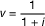
Ausscheideordnung:
lx+1 = lx ·(1 – qx – wx )
Diskontierte Lebende:
Dx = lx · vx
Rentenbarwert:
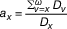
Leistungsbarwert:
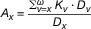
Jährliche Nettoprämie:
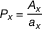
Jährliche gezillmerte Bruttoprämie:
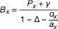
B. Prämienberechnung bei Prämienanpassungen und Umstufungen
Die Rechnungsgrundlagen, die vor dem Zeitpunkt der Prämienanpassung gegolten haben, werden mit einem hochgestellten „
a“ gekennzeichnet.
| 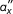 | = einmalige Sanierungs- oder unmittelbare Abschlusskosten, gemessen im Mehrfachen der Differenz zwischen neuer und alter Jahresprämie des bereits Versicherten |
| u | = erreichtes Alter zum Zeitpunkt der Prämienanpassung |
| = bisher gezahlte Prämie |
Jährliche Bruttoprämie eines u-jährigen Versicherten nach der Prämienanpassung:
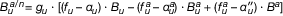
mit
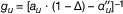
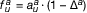
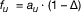
Der Ausdruck für 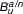 ändert sich entsprechend, wenn
- –
ein Kostenzuschlagssystem nach § 8 Absatz 4 Satz 4 verwendet wird,
- –
die einmaligen Sanierungskosten in anderer Weise eingerechnet werden,
- –
die unmittelbaren Abschlusskosten bei Umstufung in anderer Weise eingerechnet werden oder
- –
eine andere Formel für die Berechnung der Prämie des Neuzugangs nach § 10 Absatz 5 verwendet wird.
Interpolationen der Rechenwerte auf den Zeitpunkt der Prämienanpassung oder der Umstufung sind zulässig.